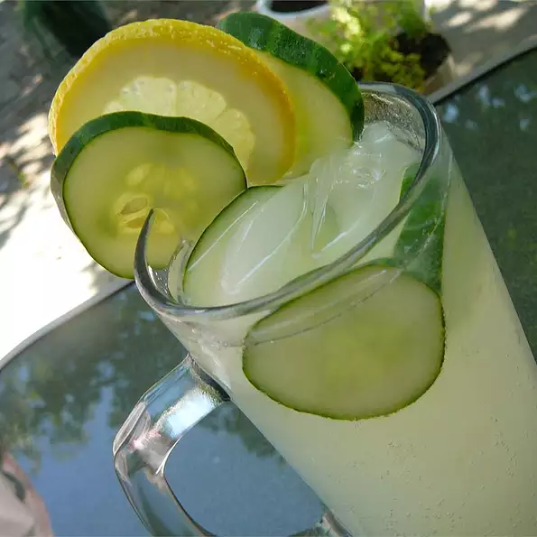

Receta para preparar una limonada de pepino

Descripción: Limonada de pepino.
Ingredientes:
- 1 pepino, en rodajas finas
- 1 lata (12 onzas) de concentrado de limonada congelada
- 1 botella (2 litros) de bebida carbonatada sabor lima-limón
Pasos a seguir:
- Coloque las rodajas de pepino en una jarra grande. Vierta el concentrado de limonada sobre el pepino y deje
reposar durante 10 minutos. Vierta el refresco de lima-limón y vierta en vasos para servir..